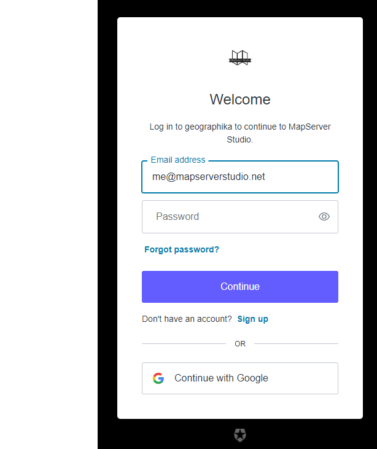

User Accounts and Payments#
Authentication is handled by Payments are handled using Stripe.
If you have any problems or issues with logging in or management payments please contact support@geographika.net
If you have a subscription you should be able to manage payment methods and billing details by clicking the Stripe link on the “User Profile” window. Alternatively login using https://billing.stripe.com/p/login/dR6g1Q4TjgfV0ms6oo
Reset your Password#
Please check your Spam folder for any “Rest your password” links from “MapServer Studio”.